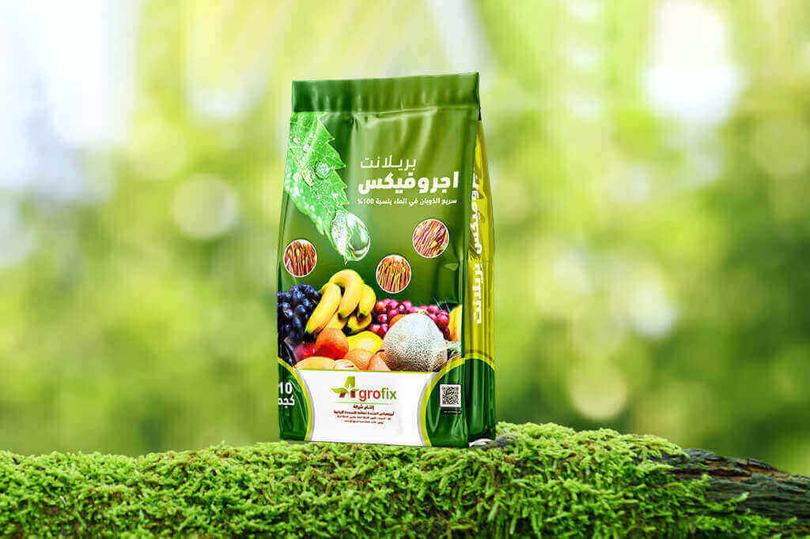
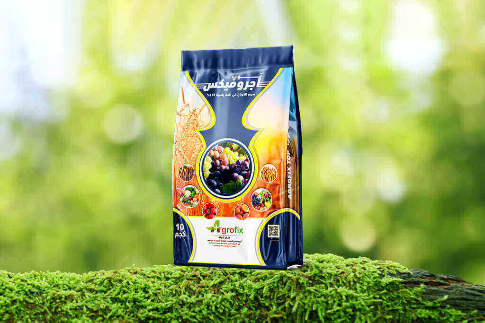
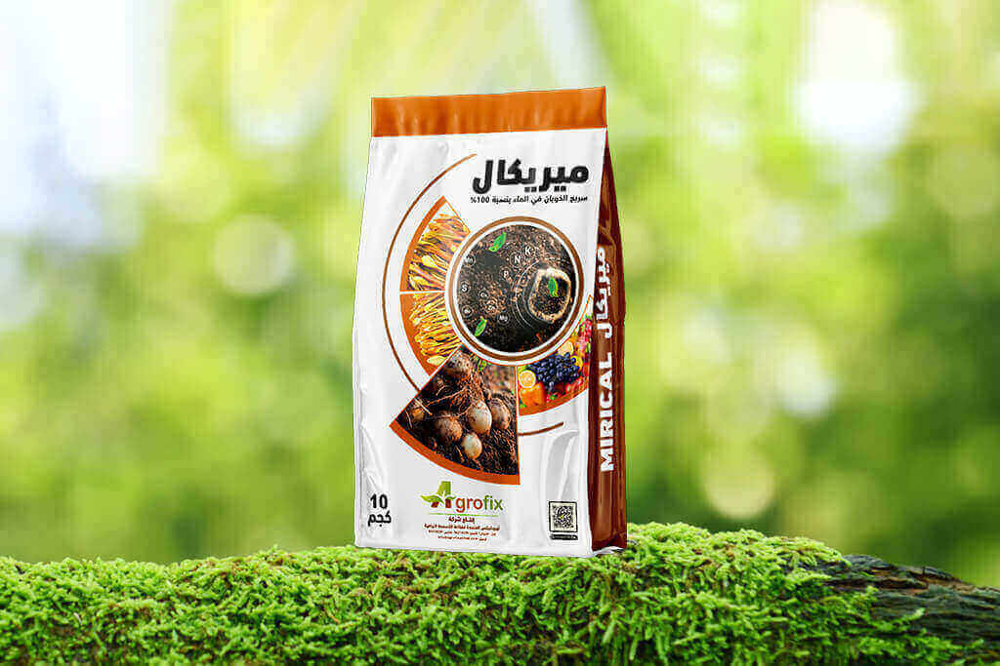
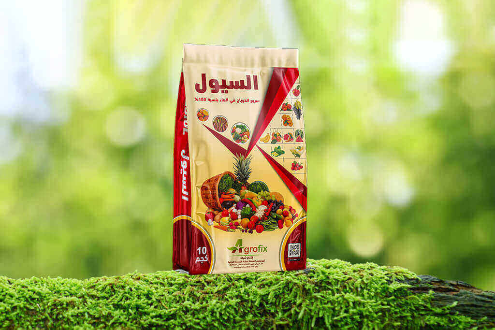
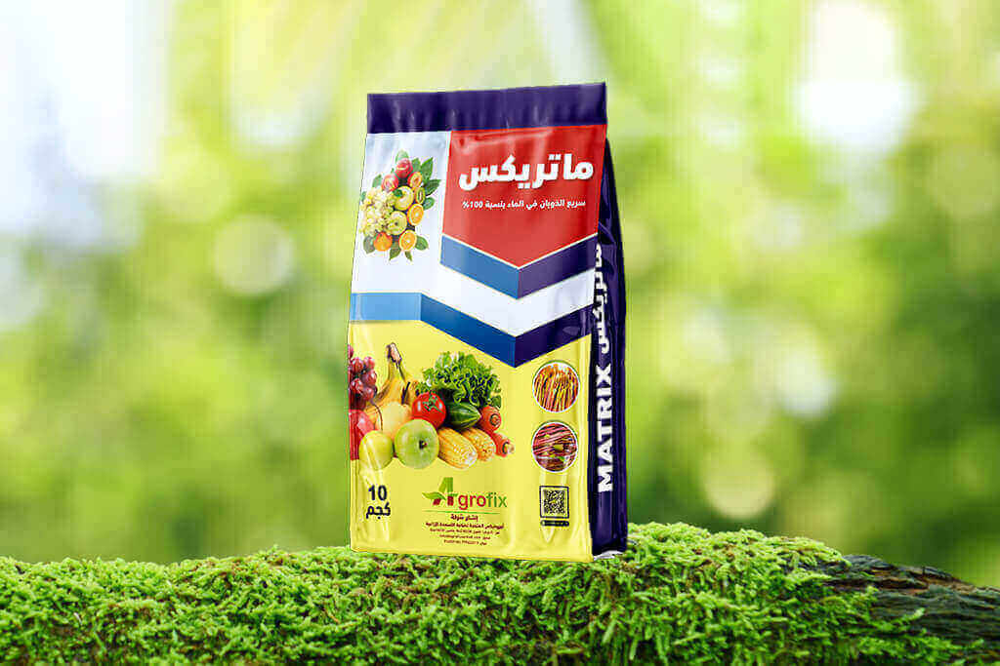
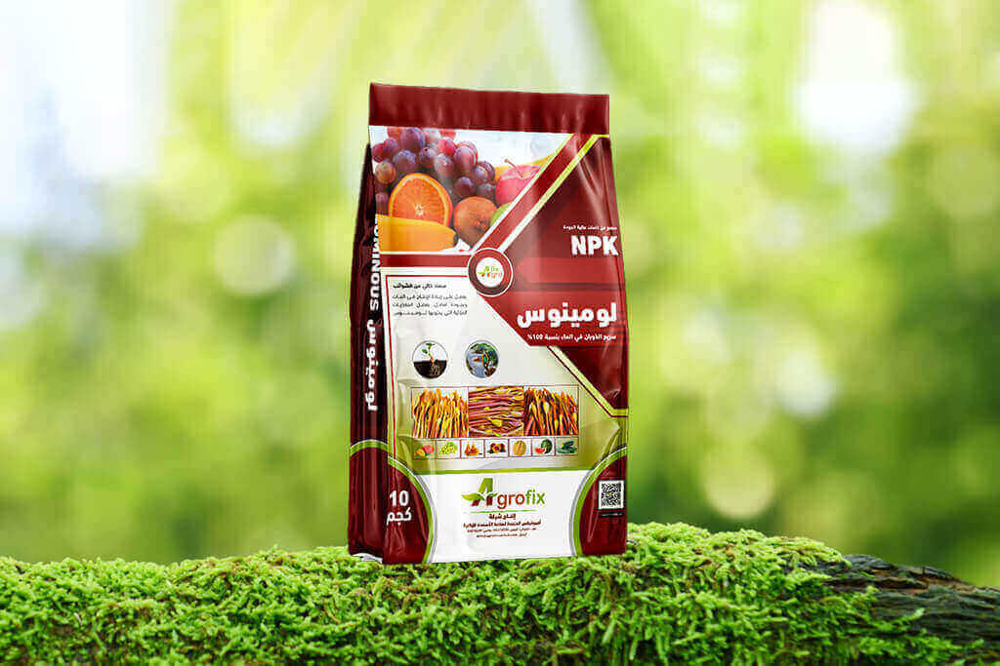
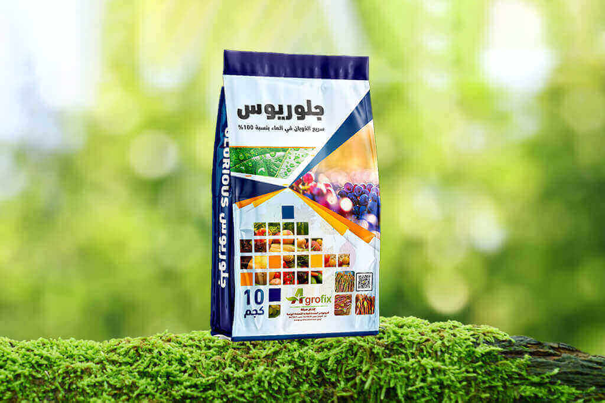
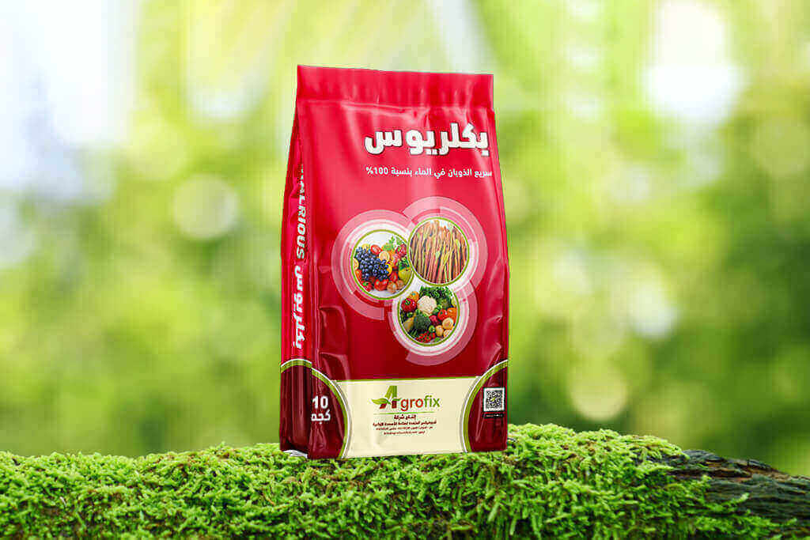

Fertilizer Compound Mode From High-Quality Materials

AGROFIX BRILANT
- Enhances plant resilience against drought and diseases.
- Promotes dense flowering, leading to abundant and higher-quality fruit.
- Maintains soil fertility, ensuring continuous nutrition.
- Supports critical stages like flowering and fruiting for abundant crops.
Agrofix Super
- Promotes balanced plant growth from roots to leaves.
Stimulates early root development and plant growth stages.
- Boosts root and cellular development, ensuring plant strength and health.
- Strengthens roots and toughens plants.

Agrofix Top
- Optimal nutrition balance for robust growth across plant life stages.
- Strong root development and early growth support.
- Enhances flowering and leaf resilience to harsh weather.
- Boosts fruit formation and ripening while enhancing quality.

Mirical
- Promotes well-rounded development of roots, leaves, and fruits, enhancing overall plant growth.
- Preserves soil health with comprehensive nutrients.
- Enhances resistance to stresses like drought and salinity.
- Enhances fruit size and quality significantly.

Alsiol
- Enhances plant growth balance, strengthening their resilience.
- Accelerated root growth and rapid vegetative phase onset.
- Promotes robust root growth and soil fertility.
- Enhances flower density and fruit set.

MATRIX
- Stimulates comprehensive growth in leaves, roots, and fruits.
- Promotes abundant flowering and increases fruit yield.
- Ideal for root growth and harvest preparation.
- Strengthens plant immunity, increasing disease resistance.

Luminous
- Enhances soil fertility for sustainable farming.
- Enhances early root development for stronger plants.
- Rich in essential elements for long-term soil fertility.
- Optimizes nutrient absorption.

Glorious
- Supports fruit development, boosting nutritional and commercial qualities.
- Boosts root development and initial plant growth.
- Enhances root strength for faster growth and improved plant health.
- Builds plant immunity and disease resistance.

Bakalrious
- Increases fruiting rates and improves fruit quality through comprehensive nutrition.
- Improves soil fertility and supports nutrient balance.
- Enhances environmental resilience, reducing stress from drought and salinity.
- Speeds up nutrient absorption for richer soil.